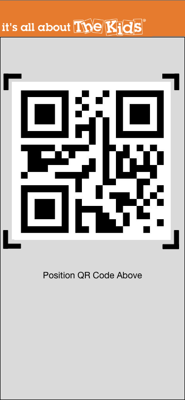
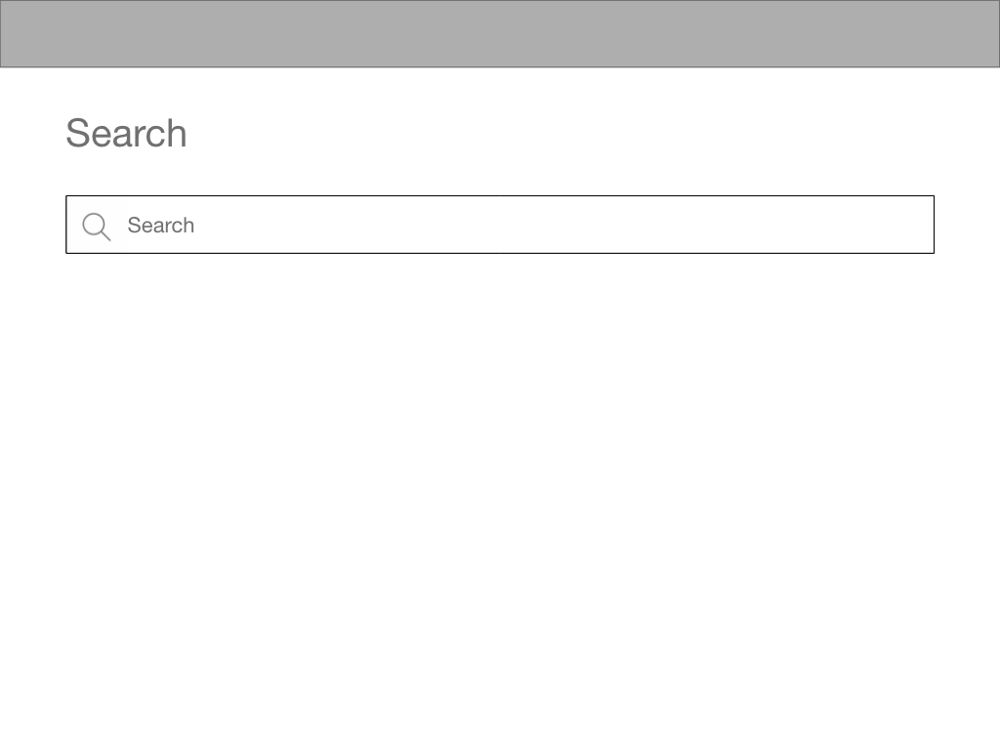
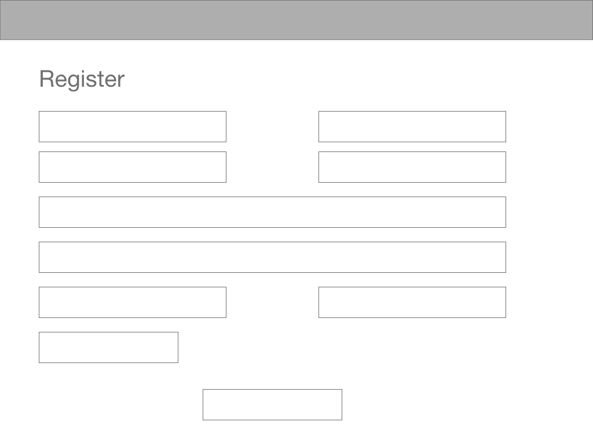
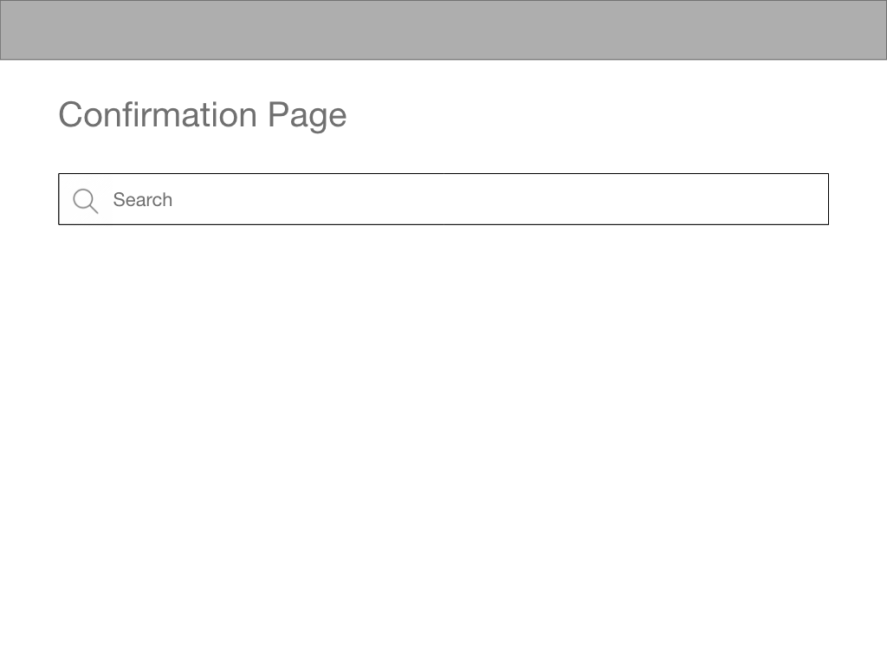
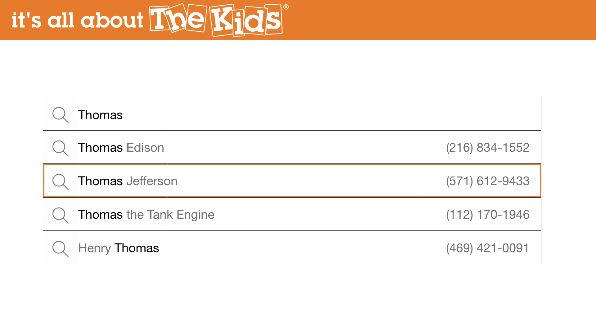
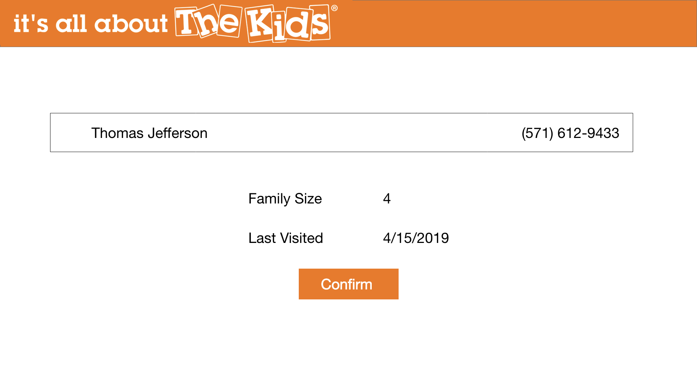
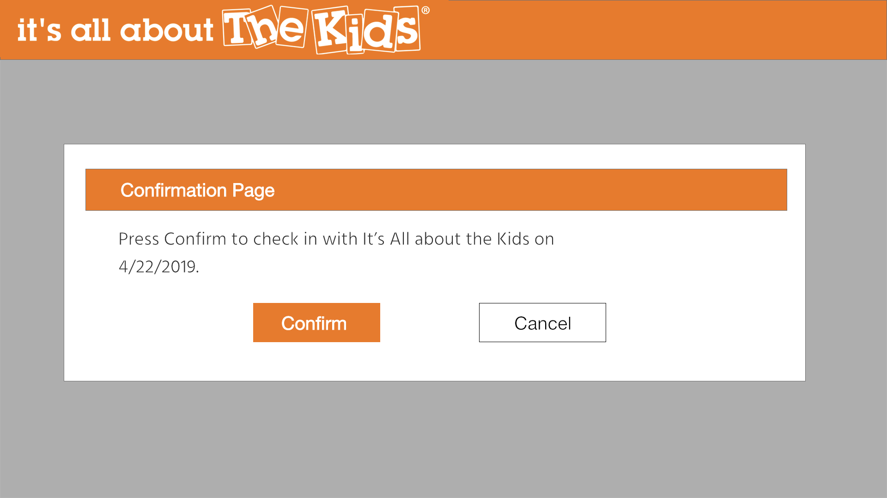
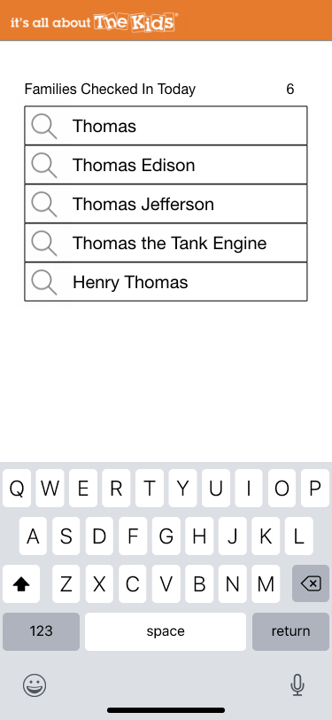

It's All About the Kids Foundation is an non-profit organization in San Diego focus in providing nutritious food for children in impoverished neighborhoods. There are over 200 families registered for the food pantry service. Volunteers come in each week to sign families in and distribute food to them. The organization encountered a bottleneck situation during check-in each week and they do not have a reliable way in collecting and editing information for the registered families.
How can we create a easy-to-use tool that can speed up the sign-in process?
Research & Initial Assumption
How is this valuable?
Efficiency. Speed up the check-in process to allow for family members to spend their quality time elsewhere. Working-family members can head to work without worrying about spending unnecessary time in check-in.
Informative. We can make a prediction with the data we have collected on how many people are coming in at different times of the year. We can then prepare the appropriate amount of food and cut down on food waste and save on budget.
Persona. Who uses this product? And what are some of their struggles?
The director of It's All about the Kids needs a data collection of families that come in.
It's frustrating not knowing how many families come in each week and have to guesstimate how much food to prepare.
Having to manually transfer data from paper sign-in sheet to an Excel document is time consuming.
Volunteer who wants to make a difference in making a change in their community and provide children with nutritious food.
It takes time to go through each column on the sign-in sheet and having to recite the alphabetical order to locate the correct entry of the family coming in.
Where and when will it be used?
Volunteers that come in each week differs and the amount varies. Tool needs to be designed to be easy to use and eliminates the need of training.
It's All About the Kids Foundation plans to continue to expand its' Food Pantry across San Diego to help more families in need. New Food Pantry locations require a check-in system and its own database to estimate the amount of food to prepare.
Ideation
Observing Previous System
The original check-in system which utilize a printed-out sign in list with family names ordered in alphabetical order and families were checked in manually one at a time. Families provide their first and last name verbally to check-in. Volunteer then locate their name on the sign-in list. Once the correct entry has been located, families are asked to sign their initial to confirm that they have received their food for the week. When food pantry closes, the director has to manually enter the data of which families have come in for that week.
System Map
We identify that the bottle-neck problem begins when volunteers take time to search for the entry of the families' names and when families have to repeat their name when volunteers did not quite catch it the first time. Then a line slowly begins to form. During rush hour, the line can last up to 2 minutes.
Problems to tackle.
Paper sign-in sheet are not durable and eco-friendly. One copy is being printed out each week limiting the sign-in process to only one location.
Volunteers have to recite the alphabetical order each time to locate the families' last name.
Repeated first and last family names and repeated entry from multiple sign-ups.
English is a second language for most families and sometimes communication comes to a halt and it takes time to explain the process through body language or a translator.
Difficult and tedious to record data and it is difficult to visualize data.
We have created low fidelity prototypes and tried to explore our options.
QR Code Membership Card

Pros:
Very fast, reduce interactions between families and volunteers.
Cons:
Requiring families to do an extra part of bringing their membership card each week.
Having to teach volunteers and families of what an QR code system is.
Losing an QR code require a reprint and ultimately we do not want to completely remove interaction between families and volunteers.
Utilizing Google Sheets
Pros:
Very simple to use and most people with an Google account can access this tool.
Cons:
Requiring families to do an extra part of bringing their membership card each week
We need to teach volunteers on how to use specific functions on Google Sheets to find name easier.
Using Google Sheets can lessen the time it takes to search for an entry but it does not specifically solve any of our problems.
Smart Auto Complete Search
Pros:
Provides feedback as you type and the search results narrows down as you provide more information.
Cons:
Introduces problems of user errors in misspelling and not being able to correctly spell a name.
Wireframing
Quick drafts of potential functions help narrowing down the main function of our project.



Solution
We decide to use an auto complete search system because of how intuitive it is to use and it allows for keeping the initial way of interacting between families and volunteers.
Functions
Searching for families
The smart search functions similar to any smart search.
The auto complete system will match what you have entered and give feedback from the existed data in the database.
Providing confirmation information

Phone number can also be used as an alternative to check-in to avoid situation of two different families sharing the same name.
Tracking data

Data base will then create a new excel file page when you initial a new file. For example, each week by creating a new page, a new tab will be created and it keeps track of which family has signed in at what time and at the end of the day the number of families along with total family members helped is displayed.
A confirmation page allows for volunteer to confirm the identify of the family coming in as a replacement of signing with initials.

On the Go

By providing a check-in option using a tablet or mobile phone allows for volunteer to check in the families in line. In return, we are able to cut down the waiting time in line.
Reflection
Spending time checking-in as a volunteer is valuable provide another insight of what actually slows down the process, we initially thought that a slow-down only happens due to the amount of people coming in but did not expect that time are mostly spend on searching up the family name on the sheet of paper and having to go through each column.
I thought that speed was the most important, as we interview more volunteers, people actually enjoy the aspect of speaking to the families who come in and have eventually form friendship during their time volunteering.
I did not expect the concept of QR Code is foreign to our clients until we have actually been to the site.
Conclusion
Design for your targeted demography.
Communicate clearly with your client to find the user need.
We initially planned to implement an QR code check-in system due to the nature of efficiency and might eliminate the slow down once families became familiar in the system and eliminates the need of communication. However, we soon realize that many clients are not familiar with what a qr code is which might discourage them from using the food pantry service.
We decided to replace the original data sheet with a search engine. The check in process is familiar for both volunteers and families. The search engine matches searched item from the database and provides information of family size and phone number for volunteer to confirm with our clients. Implementing multiple devices allow for faster queue time.